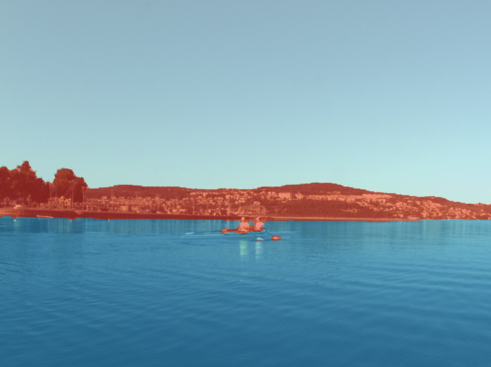
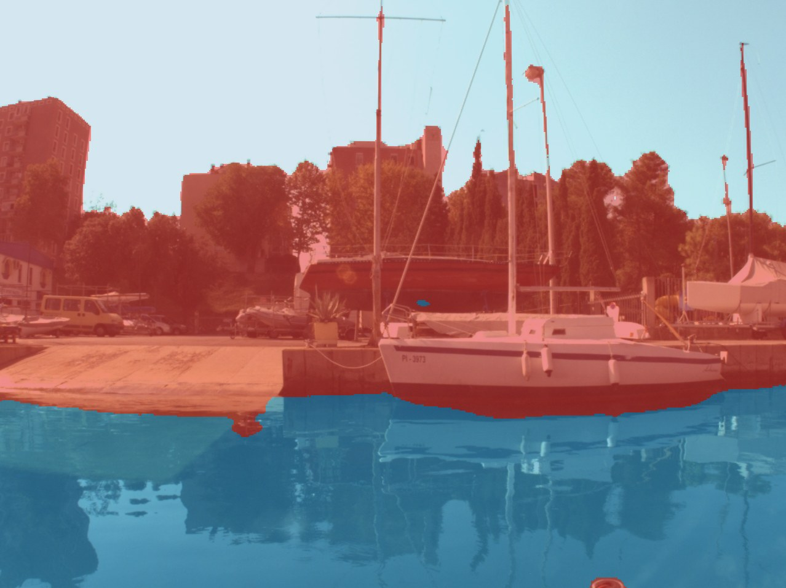
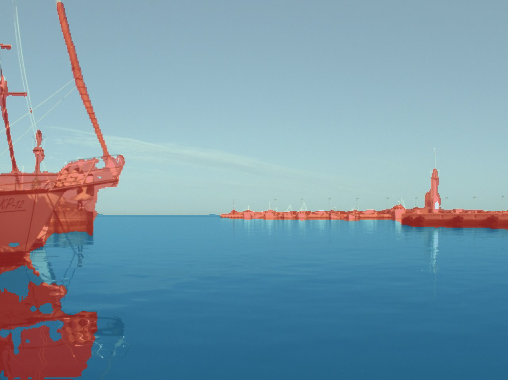
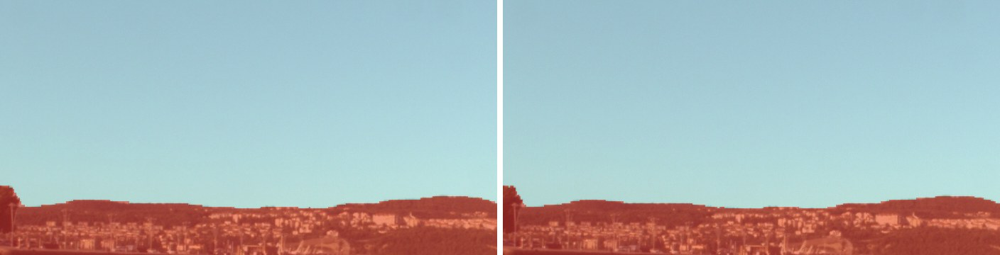
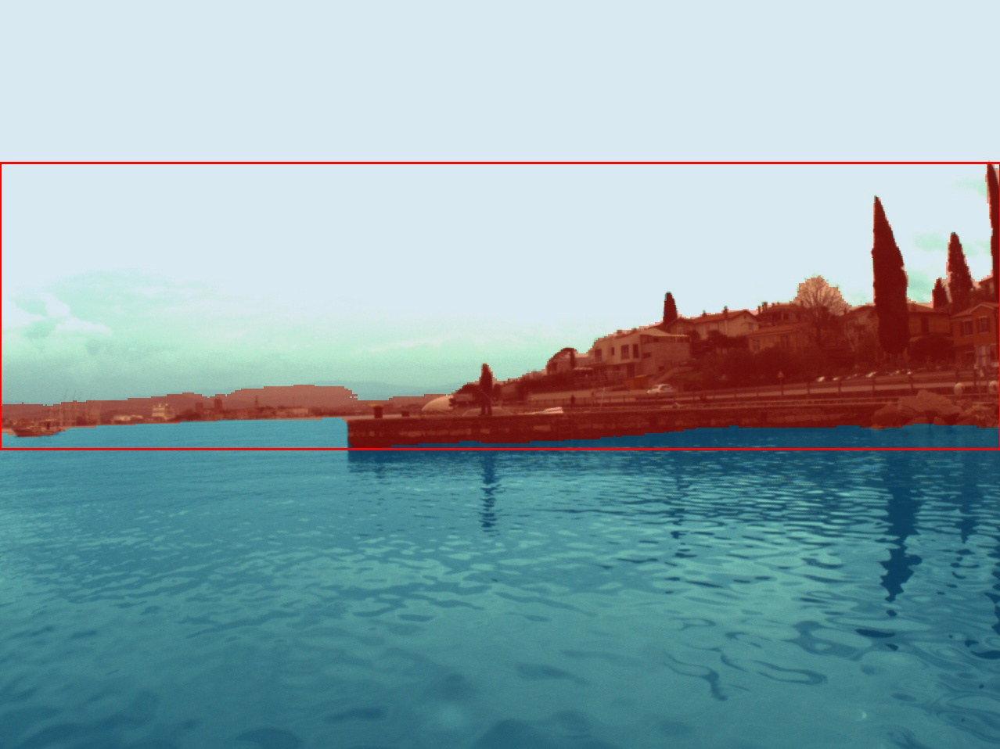
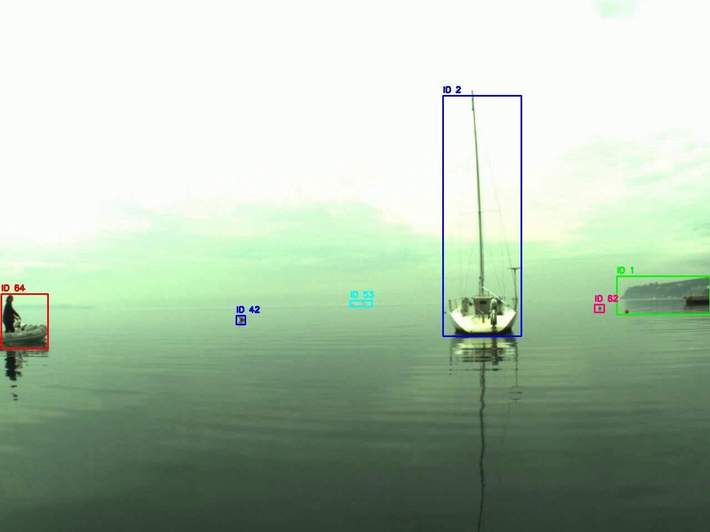

An autonomous boat has to spot a buoy or a small vessel early enough to steer around it, and keep track of it while waves rock the camera. Those waves make a stationary obstacle appear to drift across the image, which throws off tracking. Unmanned surface vehicles (USVs) and other small autonomous platforms face strict payload and power constraints, preventing them from carrying high-performance GPUs. Perception has to run on a compact onboard computer instead, sharing its compute, memory and power with navigation and control. That makes efficiency as important as accuracy. I built a camera-based pipeline that detects and tracks floating obstacles in real time on a consumer GPU, measuring speed and memory alongside accuracy, as a step toward that kind of onboard hardware.
The pipeline works in stages. A U-Net segmentation network trained on the MaSTr1325 dataset first labels every pixel as water, sky or obstacle. A geometric filter then separates floating obstacles from the shoreline, and a Kalman filter/SORT tracker I wrote from scratch in NumPy follows each one with a persistent ID. An optional IMU-based correction removes the camera's own rotation before matching.
On the MODS benchmark the model scores 92.0% obstacle F1 with an 18 px water-edge error, and the full pipeline runs at 69 FPS end to end on an RTX 5070. Against eWaSR, a published model built for embedded hardware, it comes within half a point of F1 and uses 40% less GPU memory, while eWaSR runs faster and raises fewer false alarms close to the boat. The IMU correction helps on choppy water and hurts on calm water. The code, trained weights and every number on this page can be reproduced from the repository.
MaSTr1325 labels shoreline and piers as "obstacle" too, so a geometric filter keeps only the blobs that matter. Enclosed mode keeps blobs with open water above them, like a buoy at sea. Adjacent mode keeps anything that touches water, which also catches boats near the coast.
U-Net with an ImageNet-pretrained ResNet-34 encoder (24.4 M parameters), small enough to run in real time.
v1.2 uses eWaSR's published training recipe, copied before seeing any results. That means its augmentation, a focal loss, and a loss that pushes obstacle features away from water features. It trains on all 1,325 MaSTr1325 images, because v1's validation split turned out to leak near-duplicate frames. MODS is the test set instead.
Augmentation
| Framework | PyTorch |
| Input size | 512 × 384 |
| Batch size | 8 |
| Epochs | 50 (~13 min on one RTX 5070) |
| Optimizer | AdamW |
| Learning rate | 3 × 10⁻⁴ |
| Weight decay | 1 × 10⁻⁴ |
| LR schedule | Cosine annealing |
| Loss | Focal + 0.01 × water–obstacle separation |
| Training data | All 1,325 MaSTr1325 images |
v1.2 on MODS frames it never saw in training (red = obstacle, blue = water, pale blue = sky).



MODS (Bovcon et al., T-ITS 2021) serves as the go-to benchmark for USV obstacle segmentation. It features 94 sequences and 8,175 annotated frames from completely novel recordings, and it measures performance rather than strict pixel overlap. It scores how close the predicted water edge is and how many obstacles the model finds, including within 15 m of the boat.
As a reference I ran eWaSR (Teršek et al., Sensors 2023), a published model built for embedded hardware and trained on the same data, from its released weights. Same GPU, same pipeline, same toolkit.
| MODS | Water-edge error | Obstacle F1 | F1 within 15 m | Precision (within 15 m) | Recall (within 15 m) |
|---|---|---|---|---|---|
| v1: U-Net / ResNet-34, original recipe | 18 px | 90.3% | 84.8% | 92.5% (77.0%) | 88.1% (94.4%) |
| v1.2: same network, eWaSR recipe | 18 px | 92.0% | 85.6% | 95.9% (77.8%) | 88.4% (95.0%) |
| eWaSR ResNet-18, camera only | 21 px | 92.4% | 90.3% | 97.5% (87.7%) | 87.7% (93.1%) |
| Speed (RTX 5070, fp32, batch 1, 512 × 384) | Network only | Full pipeline | GPU memory | Parameters |
|---|---|---|---|---|
| U-Net / ResNet-34 (v1 and v1.2) | 268 FPS | 103 FPS | 193 MiB | 24.4 M |
| eWaSR ResNet-18 | 334 FPS | 112 FPS | 326 MiB | 60.3 M |
Full pipeline means decode, segmentation, boxes and tracking, without drawing or video encoding.
To check that the gain from v1 to v1.2 wasn't luck, I trained each recipe with three seeds. F1 averaged 90.6% for v1 and 92.0% for v1.2. False alarms dropped about 21% on average, less than the 47% my first run suggested.
Recall is as good as eWaSR's. The gap is false alarms, mostly fog near the horizon, reflections of nearby boats and sun glare, and the new recipe didn't reduce them close to the boat.

Raw segmentation includes the coastline. The enclosed filter keeps only blobs that have open water directly above them, isolating floating obstacles.

Each obstacle gets its own Kalman filter and an ID. Tracks stay hidden until they've been seen five times, which filters out flicker from glints, and they survive up to 20 missed frames.

When the boat rocks, still objects jump around in the image and the tracker loses them. The IMU measures that rotation, so I turn it into an image warp (H = K · ΔR · K−1) and apply it to each track's prediction before matching. The camera-to-IMU rotation comes from calibration sequences recorded on flat ground.
First I checked whether the IMU agrees with the camera, by measuring the camera's rotation from the video itself.
| Sequence | Agreement with camera (pitch / pan / roll) | Rotation re-fitted from video vs calibration | Image-motion error, none → IMU |
|---|---|---|---|
| kope75 | 0.91 / 0.97 / 0.90 | 4.2° apart | 6.2 → 2.3 px |
| kope81 | 0.83 / 0.89 / 0.91 | 3.4° apart | 2.7 → 1.3 px |
| kope82 | 0.85 / 0.81 / 0.86 | 5.2° apart | 10.9 → 3.8 px |
| kope67 (2 sequences) | ≈0 / 0.82–0.99 / ≈0 | no rotation fits | 3.7 → 4.7, 1.6 → 1.9 px |
| kope71 | ≈0 / 0.77 / ≈0 | no rotation fits | 7.6 → 14.6 px |
In three recording sessions it agrees closely and removes half to two-thirds of the camera motion. In two others (kope67, kope71) the IMU's pitch and roll don't match the camera at all.
| Effect on tracking (overlap of predicted box with its detection) | Camera motion | No IMU | IMU |
|---|---|---|---|
| kope82, choppy, IMU reliable | 0.65°/frame | median IoU 0.00 | 0.72 |
| kope81, calm, IMU reliable | 0.16°/frame | 0.93 | 0.78 |
| kope67, IMU pitch/roll unreliable | 0.22°/frame | 0.64 | 0.47 |
So compensation helps a lot on choppy water and slightly hurts on calm water, where the Kalman filter already handles the slow drift. An earlier version of this page showed no benefit at all, because of two bugs in my code that are now fixed and tested.